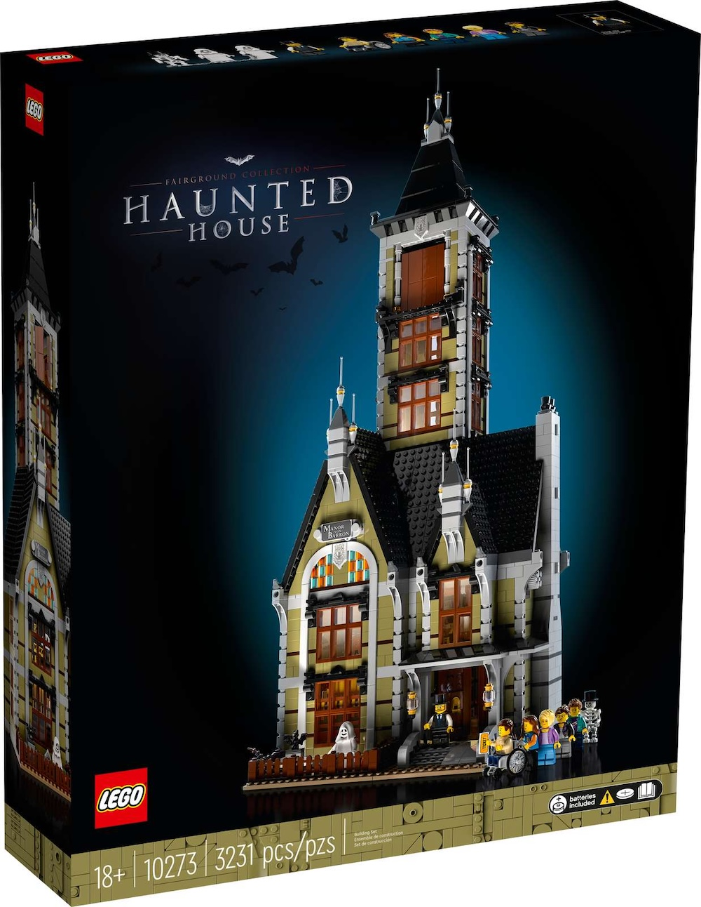
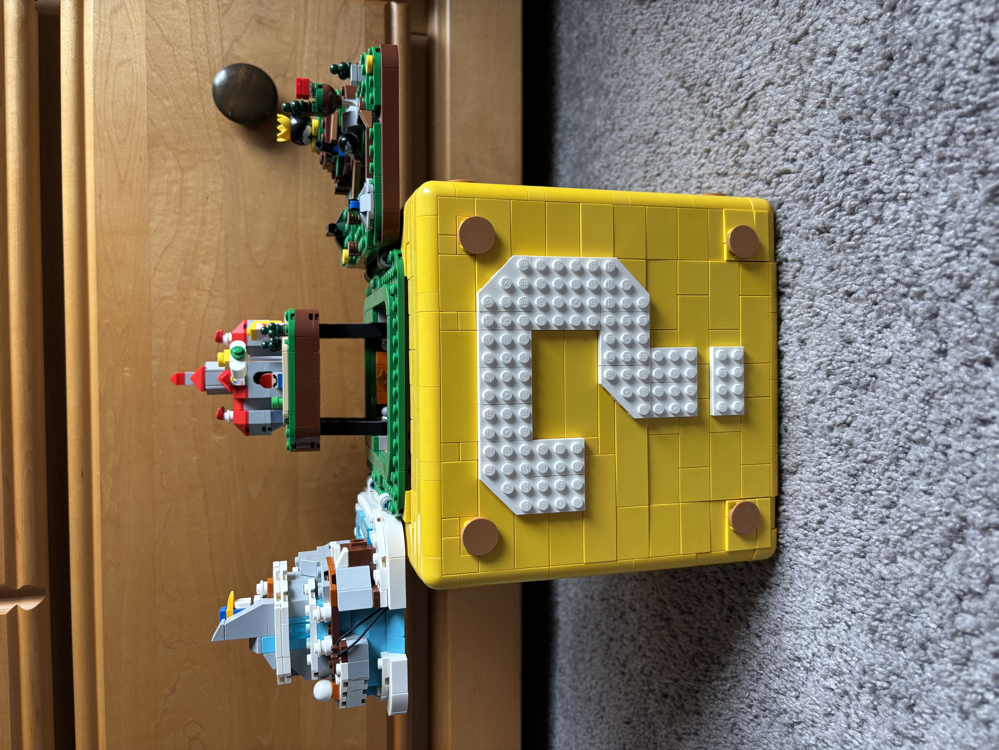
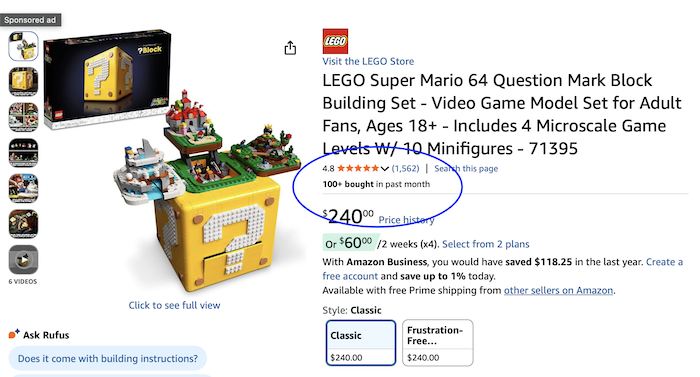
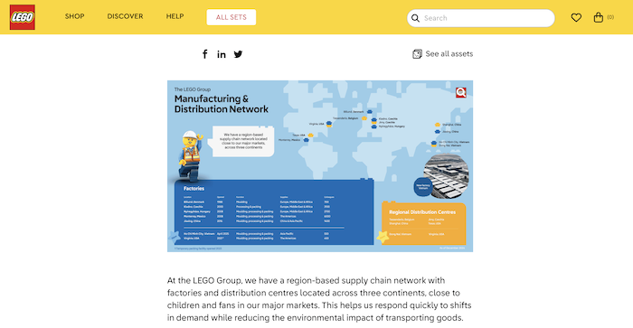
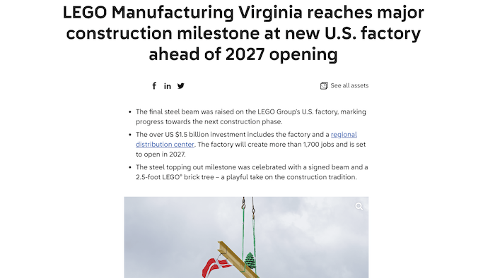

The What, How, and Why of Brick Corner
This Feature Article comes to you from Gianna, our Site Manager. It consists of her history of interest in LEGO, highlighting that her incentive to start collecting LEGO sets came later in her childhood with the release of LEGO Super Mario. She will discuss how this fact, an experience she had, and her background in entrepreneurship came together to inspire Brick Corner. After debriefing the story behind the site’s creation, she will do an in-depth analysis on the research from every page. She will lay out Brick Corner’s mission and how all the data on the site brings us one step closer to our goal. If you are trying to make sense of all these graphs and maps and pictures, you have come to the right place!
You probably have two questions about the purpose of Brick Corner. “Why LEGO?” “Why are you so interested in the marketing tactics of a specific company?” LEGO has been producing plastic bricks since 1947. They were always marketed towards kids from 1-12. There were commercials on kids’ TV channels where the minifigures would be battling with epic music. I never paid attention to these as a little girl, but, one day, I realized that they do not make those ads anymore. What changed? I was on a walk with my mother in late 2020. When we were walking, she told me that she read that LEGO almost went out of business, but was turned around when they brought in the adult target market. They brought in a new CEO, Niels B. Christiansen, in 2017. This fact was very intriguing to me, and it made me want to research more on the matter.
Maybe I would not have been so intrigued by this if it were not for the fact that I started collecting LEGO sets myself in the same year. LEGO Super Mario launched on August 1, 2020.
It was my first incentive to ever pick up LEGO. It intrigues me that, even with LEGO being such a large franchise, new people are roped in with every series they introduce. If you thought 2020 held enough incentive for Brick Corner, you would be wrong. This same year was when LEGO first started using their new 18+ box design; it was first employed for the Fairground Collection Haunted House in late May.

This is where my background in entrepreneurship comes in. As an entrepreneur minor at Rutgers University, I am constantly researching case studies on companies with different paths to success. LEGO’s drastic target customer segment shift is a unique case that I feel is important to know about if I want to manage a venture in my future. LEGO’s strategies help me further grasp the sociology behind marketing.
With that being said, the goal at large of Brick Corner is to perform a full analysis of the marketing strategies of LEGO. There are so many angles from which the marketing structure of LEGO can be tackled, and I aim to cover them all. From left to right, the site begins with the Reviews page. The Reviews Page is a preliminary step to online research that features my opinions on the Super Mario 64 ? Block set and the LEGO Flagship Store in New York City.


The Super Mario 64 ? Block, the second Nintendo 18+ set to be released, is a set that I bought for my personal collection and built from start to finish. Along with being excited for the set as a Mario superfan, I wanted to get a grasp on what makes a LEGO set 18+. In my review, I emphasize the amount of details that were put into the set to mirror the real Super Mario 64 game. Super Mario 64 was released in 1996 and is revered by ‘90s and ‘00s kids. These adults buy a set like this for the nostalgia factor; they have a stronger eye for accuracy, which explains why LEGO made the set super accurate to the game. With the amount of tiny pieces and steps needed to put them all together, younger audiences can get lost in the directions more easily. The lack of transportability that the set has also makes sense because adults are less likely to actually move the set around to play with it. Adults likely treat LEGOs as collectibles rather than toys; I know I do that with this LEGO set and the others that I have. This review shows what LEGO means by “18+,” and what they are keeping in mind when creating sets for adults. The other review on the Reviews page is of the New York City LEGO Store. I went to check out the store to get an idea of what their target market is. While the store sells many of both -18 and 18+ sets, it is dominated by 18+ displays. However, the pricing, scenery, and activities found in the store can be enjoyed at any age. My main complaint with the LEGO store was its lack of organization, with the same series appearing in multiple places around the store. My best guess as to why is to encourage impulse buying, which any age group would do but mostly kids. Overall, the LEGO store seems to be marketed towards everyone; both the child and adult customer segments are definitely heavily considered in the store’s design.
The Visual Research Gallery presents visual data in two forms: pictorially and graphically. The pictorial section is meant to display various examples of concepts that are heavily discussed on the website. This includes the detail and functionality of another 18+ set (The Super Mario World: Mario and Yoshi set), 18+ box art versus -18 box art, and the displays in the LEGO Store NYC. The graphical data is about sales in particular. There are three graphs, each focusing on a different series of LEGO sets: Super Mario, Marvel, and Star Wars. For each series, I inspected six sets: three -18 and three 18+, a mix of retired and available. I assume that the ratio of review count to number of sales is consistent, meaning that I can use review count to gauge how often each set is purchased. My assumption is affirmed by Amazon’s display of approximately how many users bought from a listing in the past month.

The number of reviews recorded on the graph for each set is a sum from lego.com and amazon.com. While each series has some variation, the consensus across the board is that 18+ sets are purchased more often. This set of data confirms that the adult target segment should be valued by LEGO. This explains why LEGO is leaning more into their 18+ market; they are receiving more sales from their 18+ sets even with them costing much more on average. A potential error in this assumption is that way more -18 sets exist in these series, so the child audience is more spread out.
The Map page shows the geographical location of each of LEGO’s seven factories and six regional distribution centers, colored by continent. The locations of the facilities are illustrated by LEGO, but they only provide further information on each via news articles.


I have supplemented each factory with its opening year, percentage of LEGO’s colleagues that work there, continent(s) it supplies, and a fact. Each regional distribution center is supplemented by its square footage. Beginning with the factories, their opening date reveals the order in which LEGO expanded globally. It began in Denmark, spread across Europe, expanded to North America, and then expanded further to Asia. The percentage of colleagues along with what continents each factory serves reveals how much work LEGO feels they need in each continent. The facts serve to further differentiate the factories, helping us pinpoint specific important operations in each region. The square footage of the RDCs also contribute to how much work LEGO feels they need in each region; the larger the area of the RDC, the more space LEGO felt they needed in that region. LEGO is breaking their record for their largest RDC with the opening of the one in Virginia in 2027. Despite LEGO having an RDC in the United States already (Texas), they wanted to gain significantly more distribution space and port access in the country.
The About page outlines in more detail my position as the creator, manager, and designer on Brick Corner. It also identifies the position of my three teammates who contributed greatly to the creation of the site, as well as discussing their backgrounds. The history and defining moments of our website for each year since we began in 2020 can be found there. At this point, I feel I have screamed that LEGO has become a more adult-oriented company in recent years. According to the research I have conducted for Brick Corner, it is working. Each series has a different level of success, but each series holds a portion of LEGO’s customer base. Each region of the earth holds a portion of LEGO’s customer base. The fact that, relatively recently, a global company has uncovered a new target market segment that is arguably more successful than their original one is astounding. If you are considering entrepreneurship like me, it is a case worth studying. In the future of Brick Corner’s research on LEGO, I will dive deeper into their regional strategies. I will discuss the originating region of some of the most successful LEGO sets and why that matters. I will also conduct research on more series: Cars, Ideas, Sonic, Disney, and more. I will compare the quantity of sets each series has, and frequency of releases they see, and the percentage of success they bring to LEGO.